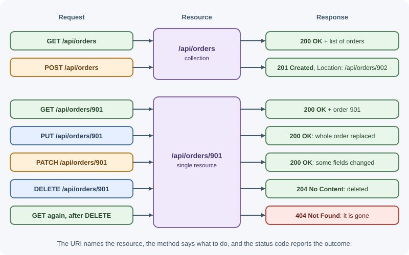
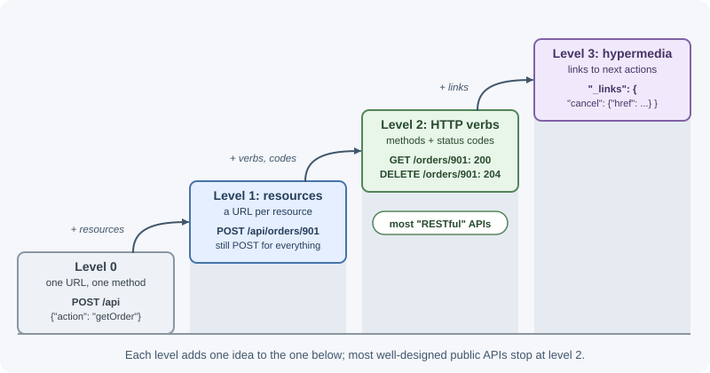

REST APIs¶
An API (Application Programming Interface) defines how software systems talk to each other. REST (Representational State Transfer) is an architectural style for networked applications, described by Roy Fielding in 2000. In everyday web development, a "REST API" means an HTTP API where URLs identify resources and standard HTTP methods read or change them.
Why it matters¶
- REST is the most common style for web and mobile backends, and for public APIs from payment, messaging, and cloud providers.
- It reuses what HTTP already provides (methods, status codes, caching, content negotiation), so clients, proxies, and tools understand it without custom software.
- A consistent REST design means a developer who has learned one endpoint can guess how the rest work.
- REST's constraints, especially statelessness, are what let an API scale horizontally behind a load balancer.
Real-world usage¶
- Stripe. The Stripe API reference opens with: "The Stripe API is organized around REST. Our API has predictable resource-oriented URLs, accepts form-encoded request bodies, returns JSON-encoded responses, and uses standard HTTP response codes, authentication, and verbs." Note that request bodies are form-encoded, not JSON: REST does not require JSON.
- GitHub. GitHub's REST API uses resource URLs such as
/repos/{owner}/{repo}, standard methods,Linkheaders for pagination, andETag-based conditional requests, which reuse HTTP features exactly as REST intends. - Shopify moved from REST to GraphQL for its Admin API. Shopify states that the REST Admin API is a legacy API as of October 1, 2024, and that from April 1, 2025, new public apps must be built exclusively with the GraphQL Admin API. REST is common, but not the only choice for large platforms.
- Slack's Web API is deliberately not REST. Slack describes its Web API
as
a collection of HTTP RPC-style methods with
URLs like
https://slack.com/api/METHOD_FAMILY.method, and says it is not a REST API. It is a useful contrast to resource-oriented design.
How it works¶
The six REST constraints¶
Fielding defined REST as a set of constraints. An API is RESTful to the degree that it follows them.
| Constraint | What it means | What it buys you |
|---|---|---|
| Client-server | The user interface and the data storage are separate concerns | Frontend and backend evolve independently; many clients share one API |
| Stateless | Each request contains everything needed to understand it; the server keeps no session context between requests | Any server can handle any request; easy horizontal scaling and retries |
| Cacheable | Responses say whether they can be cached | Fewer requests, lower latency, less server load |
| Uniform interface | Resources are identified by URIs and manipulated through representations using a standard set of methods; messages are self-descriptive | Generic clients, proxies, and tools work with every API |
| Layered system | A client cannot tell whether it talks to the server directly or through proxies, gateways, and caches | Load balancers, CDNs, and API gateways can be added transparently |
| Code on demand (optional) | Servers may send executable code, such as JavaScript, to extend the client | Rarely used in APIs; the only optional constraint |
The uniform interface is the heart of REST. It has four parts:
- Identification of resources: every resource has a URI.
- Manipulation through representations: clients change a resource by sending a representation of it (for example a JSON document), not by calling remote functions.
- Self-descriptive messages: each message carries enough metadata
(method,
Content-Type, cache headers, status code) to be understood on its own. - Hypermedia as the engine of application state (HATEOAS): responses contain links that tell the client what it can do next.
Resources and URIs¶
A resource is any concept the API exposes: a user, an order, a search result, the current weather. A URI names it. A representation is a particular format of its current state, usually JSON.
Naming rules most teams follow:
- Use nouns, not verbs. The method is the verb.
GET /api/orders, notGET /api/getOrders. - Use plural collection names.
/api/ordersfor the collection,/api/orders/901for one item. - Nest only for real ownership, and only one level deep.
/api/orders/901/itemsis clear;/api/customers/7/orders/901/items/3/notesis fragile. Once an item has its own ID, give it a top-level path too. - Use lowercase and hyphens in paths:
/api/shipping-addresses. - Keep filters, sorting, and paging in the query string:
/api/orders?status=paid&sort=-createdAt&limit=20. - Model actions as sub-resources when they do not fit CRUD:
POST /api/orders/901/cancellationorPOST /api/orders/901/cancel.
/api/orders collection
/api/orders/901 single resource
/api/orders/901/items sub-collection owned by order 901
/api/orders?status=paid&page=2 filtered view of the collection
Methods mapping¶
| Method | On a collection (/orders) |
On an item (/orders/901) |
|---|---|---|
GET |
List orders | Read order 901 |
POST |
Create a new order | Usually not used (or an action) |
PUT |
Rarely: replace the whole collection | Replace order 901 entirely (or create it at this URI) |
PATCH |
Rarely: bulk partial update | Update some fields of order 901 |
DELETE |
Rarely: delete the whole collection | Delete order 901 |

See HTTP methods for safety and idempotency.
Representations¶
The same resource can have several representations. JSON is the common
choice for APIs, but the client can ask for another format with Accept,
and the server labels its choice with Content-Type. See
content negotiation.
{
"id": "ord_901",
"status": "paid",
"total": { "amount": 4999, "currency": "USD" },
"createdAt": "2026-11-03T10:15:00Z",
"customerId": "cus_7"
}
A representation is not the database row. Expose what clients need, hide internal columns, and keep the shape stable even if storage changes.
Status codes¶
REST APIs communicate outcomes with HTTP status codes: 200 for reads,
201 with Location for creation, 204 for deletion, 400/422 for
invalid input, 401/403 for auth problems, 404 for missing resources,
409 for conflicts. See HTTP status codes.
HATEOAS¶
With hypermedia, a response tells the client which actions are available, the way links and forms do on a web page:
{
"id": "ord_901",
"status": "paid",
"_links": {
"self": { "href": "/api/orders/901" },
"items": { "href": "/api/orders/901/items" },
"cancel": { "href": "/api/orders/901/cancellation", "method": "POST" },
"customer": { "href": "/api/customers/7" }
}
}
If the order has shipped, the server simply leaves out the cancel link, and
a hypermedia-aware client hides the button. Clients follow links instead of
building URLs, so the server can change URLs without breaking them.
In practice, few APIs implement full HATEOAS; most document their URLs and
expect clients to build them. Including at least self links and pagination
links (next, prev) is common and useful.
The Richardson Maturity Model¶
Leonard Richardson described levels of "REST-ness" for HTTP APIs:
| Level | Description | Example |
|---|---|---|
| 0: The swamp of POX | One URL, one method; everything is a remote procedure call tunneled over HTTP | POST /api with {"action": "getOrder", "id": 901} |
| 1: Resources | Separate URLs for resources, but still one method | POST /api/orders/901 for everything |
| 2: HTTP verbs | Resources plus proper methods and status codes | GET /api/orders/901 returns 200; DELETE returns 204 |
| 3: Hypermedia controls | Level 2 plus HATEOAS links | Responses include _links to next actions |

Most well-designed public APIs sit at level 2, which is what people usually mean by "RESTful".
Statelessness in practice¶
Stateless means the server does not remember anything about the client between requests. Every request must carry what the server needs:
- Authentication in every request: a token in
Authorization, or a session cookie the browser sends automatically. - Context in the URL or body: the page number, filters, the ID being edited.
Stateless does not mean the application has no state. Orders and users live in a database; that is resource state, and it is fine. What REST forbids is session state held in one server's memory that the next request depends on (for example "the server remembers you were on page 3"). A server session stored in Redis and looked up by a cookie on every request is a common, pragmatic compromise.
The payoff: any instance can serve any request, crashed instances lose nothing, and failed requests can be retried on another server.
When to use and when not to use¶
Use REST when:
- The API is public or used by many third parties with different tools; every language has an HTTP client.
- The domain maps naturally to resources (orders, users, invoices) with create, read, update, and delete operations.
- You want HTTP caching, CDNs, and standard tooling (curl, OpenAPI, gateways) to work without extra effort.
Consider something else when:
- Many clients need very different slices of a rich, nested data graph, and over-fetching or many round trips hurt: GraphQL may fit better.
- Internal services need low-latency, high-throughput, or streaming calls with strict contracts: gRPC may fit better.
- The API is a set of commands rather than resources (a chat or tooling protocol): an RPC style can be more honest than forcing actions into resources.
| Need | REST | GraphQL | gRPC | RPC (JSON-RPC, tRPC) |
|---|---|---|---|---|
| Public API for unknown clients | Best | Good | Poor (browser limits, tooling) | Fair |
| HTTP caching and CDNs | Best | Hard | No | No |
| Clients choose exactly the fields | Limited (fields, include) |
Best | No | No |
| Internal high-throughput calls | Good | Fair | Best | Good |
| Streaming | Via SSE or WebSockets | Subscriptions | Built in | Depends on transport |
See API styles for the details.
Practical examples¶
A complete resource: articles¶
| Method and path | Purpose | Request body | Success response |
|---|---|---|---|
GET /api/articles?author=7&limit=20&cursor=abc |
List, filtered and paginated | none | 200 + list and paging info |
GET /api/articles/42 |
Read one | none | 200 + article |
POST /api/articles |
Create | {"title": "...", "body": "..."} |
201 + Location + article |
PUT /api/articles/42 |
Replace | Full article | 200 + article |
PATCH /api/articles/42 |
Update some fields | {"title": "New title"} |
200 + article |
DELETE /api/articles/42 |
Delete | none | 204 |
GET /api/articles/42/comments |
List an article's comments | none | 200 + list |
POST /api/articles/42/publication |
Action: publish | none | 200 + article |
Create:
POST /api/articles HTTP/1.1
Host: api.blog.example
Content-Type: application/json
Authorization: Bearer eyJhbGci...
{"title":"Understanding REST","body":"REST is an architectural style..."}
HTTP/1.1 201 Created
Location: /api/articles/42
Content-Type: application/json
{"id":42,"title":"Understanding REST","body":"REST is an architectural style...",
"status":"draft","authorId":7,"createdAt":"2026-11-03T10:15:00Z"}
List:
GET /api/articles?author=7&limit=2 HTTP/1.1
Accept: application/json
HTTP/1.1 200 OK
Content-Type: application/json
Cache-Control: private, no-cache
{
"data": [
{"id": 42, "title": "Understanding REST", "status": "draft"},
{"id": 41, "title": "HTTP basics", "status": "published"}
],
"nextCursor": "eyJpZCI6NDF9"
}
Validation error:
HTTP/1.1 422 Unprocessable Content
Content-Type: application/problem+json
{"type":"https://api.blog.example/problems/validation","title":"Validation failed",
"status":422,"errors":[{"field":"title","message":"must not be empty"}]}
Implementing it in Express¶
This is a sketch of the routing layer. An in-memory articleService stands
in for the real service, and the handlers not shown answer 501 until you
write them.
import express from "express";
// Stand-in for a service layer backed by a database
const articles = new Map([["42", { id: "42", title: "Understanding REST", status: "draft" }]]);
const articleService = {
list: async () => [...articles.values()],
findById: async (id) => articles.get(id) ?? null,
};
// Handlers (controllers) call services that hold the business rules
async function listArticles(req, res) {
res.json({ data: await articleService.list() });
}
async function getArticle(req, res) {
const article = await articleService.findById(req.params.id);
if (!article) return res.status(404).json({ title: "Article not found" });
res.json(article);
}
// Placeholder for createArticle, updateArticle, deleteArticle, publishArticle
const notWrittenYet = (req, res) => res.sendStatus(501);
const router = express.Router();
router.get("/", listArticles);
router.post("/", notWrittenYet);
router.get("/:id", getArticle);
router.patch("/:id", notWrittenYet);
router.delete("/:id", notWrittenYet);
router.post("/:id/publication", notWrittenYet);
const app = express();
app.use(express.json());
app.use("/api/articles", router);
app.listen(3000);
GET /api/articles/42 returns the article, GET /api/articles/7 returns
404, and the unwritten handlers return 501 Not Implemented.
See routing and routers and project structure for how to organize this, and authentication and authorization for protecting it.
Best practices¶
- Design resources around the client's needs, not your table layout.
- Be consistent in naming, casing, pagination, and error format across every endpoint. See API design best practices.
- Use methods and status codes by their HTTP meaning.
- Keep the server stateless; store shared state in a database or cache.
- Return the created or updated resource so clients avoid an extra request.
- Paginate every collection from day one.
- Version deliberately and never break existing clients silently.
- Document the API with OpenAPI so clients and tests share one contract.
In production¶
- Mobile app crashes right after a backend deploy. Detect: the client crash reporter spikes with JSON parsing or "missing field" errors that match the deploy time. Cause: a renamed or removed response field, a breaking change. Fix: make only additive changes, version breaking ones, and run contract tests against the old clients' expectations.
- Users can read other users' records.
Detect: access logs show one account fetching many sequential IDs
(
/api/orders/1001,/1002, ...), or a security review finds it. Cause: the handler checks that the user is logged in but not that the resource belongs to them (an insecure direct object reference). Fix: check ownership on every request, ideally in the query (WHERE id = $1 AND customer_id = $2). - Screens are slow because of many requests.
Detect: traces show one page view making ten or more sequential API
calls. Cause: resources shaped like tables instead of client needs.
Fix: add
include/expandoptions or a backend-for-frontend endpoint; run independent calls in parallel. - A list endpoint times out as data grows.
Detect: latency and response size of
GET /collectiongrow week over week; slow-query logs show full scans. Cause: no pagination, or no index on the sort column. Fix: paginate with a cappedlimitand index the sort and filter columns. - Requests fail on some instances only. Detect: errors correlate with the instance ID in logs. Cause: per-instance state (in-memory sessions, local uploaded files) that breaks statelessness. Fix: move shared state to a database, cache, or object storage.
Important terminology¶
- API: a contract that defines how programs interact.
- REST: an architectural style defined by constraints such as statelessness and a uniform interface.
- Resource: any named concept the API exposes.
- URI: the identifier of a resource.
- Representation: a specific format of a resource's state, such as JSON.
- Endpoint: a method plus a path, such as
GET /api/articles/:id. - Collection: a resource that contains other resources.
- HATEOAS: responses include links describing available next actions.
- Stateless: the server keeps no client session context between requests.
- Idempotent: repeating a request leaves the same server state.
Common mistakes and misconceptions¶
- "REST means JSON." REST is an architectural style; JSON is just one representation format.
- "REST means CRUD over HTTP." CRUD maps neatly to REST, but REST is about resources, representations, and constraints, not only database operations.
- Verbs in URLs (
/createUser,/getOrders) duplicate what methods already say. - Returning
200for every outcome and putting the real result in the body. - Deep nesting that forces clients to know a whole ownership chain to reach an item.
- Exposing database internals, such as column names and auto-increment IDs, as the public contract.
- Calling an API RESTful because it uses HTTP. Level 0 APIs use HTTP but are RPC.
Revision questions¶
- Name the six REST constraints and say which one is optional.
- What does "stateless" forbid, and what does it still allow?
- Design the endpoints for a "comments on a post" resource, with methods, paths, and success codes.
- What is HATEOAS, and why do most APIs only partially implement it?
- At which Richardson level is an API that uses proper URLs and methods but no links?
- How would you model the action "cancel an order" in a REST API?
Further learning¶
- Primary source: Roy Fielding, Architectural Styles and the Design of Network-based Software Architectures, Chapter 5 defines REST and its constraints.
- MDN: REST gives a concise overview.
- RFC 9110: HTTP Semantics defines the methods, status codes, and headers REST APIs rely on.
- OWASP: REST Security Cheat Sheet.
- Next: API design best practices.